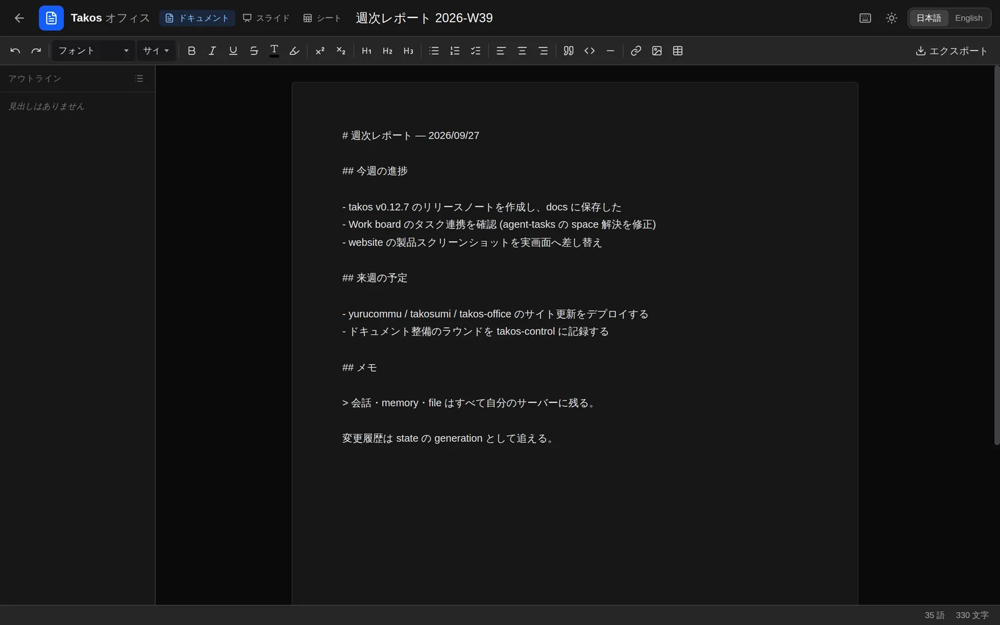
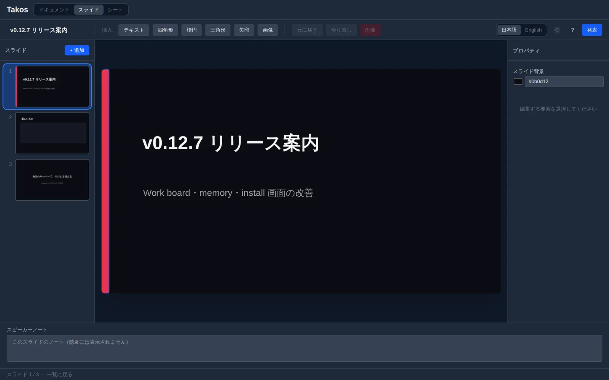
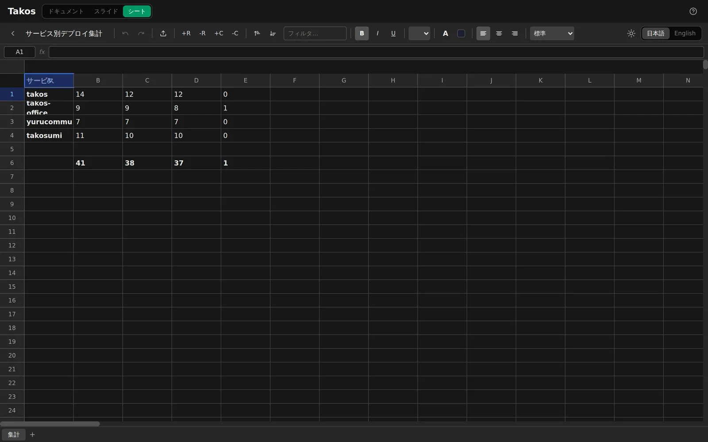

Takos Office
Self-hosted, agent-native office suite.
Docs・Slide・Sheet を、自分の Workspace の中で動かすオフィススイート。各アプリは MCP を話し、AI エージェントが文書・スライド・シートを直接読み書きできる。
Capsule を追加 → GitHub → Takos →
- license
- GPL-3.0-only
- upstream
- github.com/tako0614/takos-office
- apps
- docs · slide · sheet
- agent
- MCP — ひとつの /mcp endpoint
- install
- takos-office Capsule — OpenTofu module

Apps
文書・プレゼン・表計算を、ひとつの takos-office Capsule に。Google Workspace や Microsoft 365 で行う日常の編集を、自分の Workspace の中で行う。
-
Docsdocs
Tiptap ベースのリッチテキストエディタ。ノートも長文も、自分の space の中で書く。
-
Slideslide
Canvas ベースのプレゼンテーションエディタ。Keynote / Google Slides で行う編集を、自分の space の中で。

-
Sheetsheet
スプレッドシート / 表計算。HyperFormula で 400 以上の Excel 互換関数。バーチャルスクロールで大きな表も扱える。

Agent
各アプリは MCP サーバーを公開している。MCP 対応エージェントが、あなたの文書・スライド・シートを直接読み書きできる。
「先週のメモから提案書のスライドを作って」と頼めば、エージェントが slide を開いて組み立てる。コピペも、アプリの切り替えもいらない。
docs_* · slide_* · sheet_* — ひとつの /mcp endpoint
Roadmap
核となる3つのエディタをひとつの Capsule にまとめ、Workspace の中で完結する道具を増やしていく。将来の道具はそれぞれ独立した Capsule として、好きなものだけ入れられる。
Available
- Docs
- 文書 / ノート —
/docs - Slide
- プレゼンテーション —
/slide - Sheet
- スプレッドシート / 表計算 —
/sheet
Planned
- Calendar
- スケジュール / イベント管理
- 自分のメールボックスの上で動くクライアント
- Form
- フォーム / アンケート、結果はシートへ
- Base
- 軽量データベース / 構造化テーブル
データと運用
- data
- ドキュメントも編集履歴も、自分の Workspace の space 内に保存される
- install
takos-officeCapsule を明示的に追加する。uninstall もいつでもできる- cost
- 席数ライセンス・月額なし — 自分のインフラ費のみ
- license
- GPL-3.0-only
導入
Takos Workspace の Apps から takos-office Capsule を明示的に追加する。Docs・Slide・Sheet がひとつの Capsule で入る。